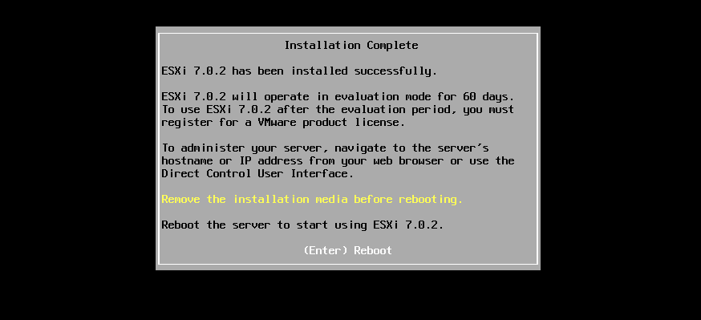
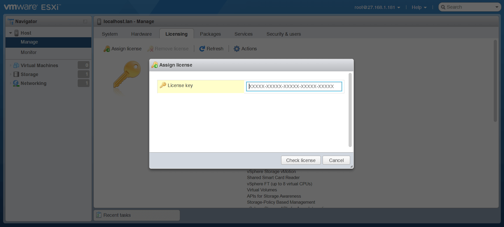
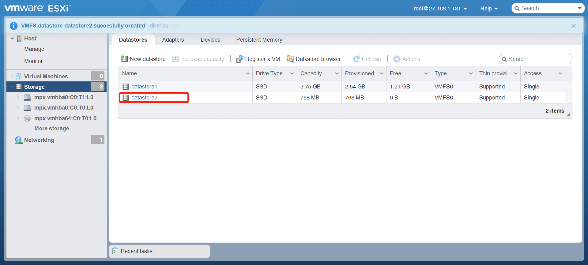
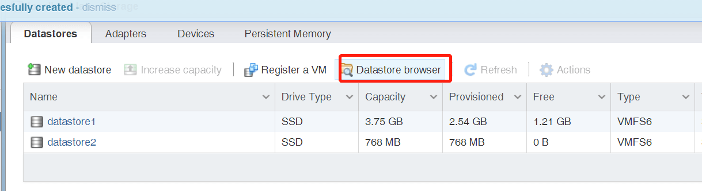
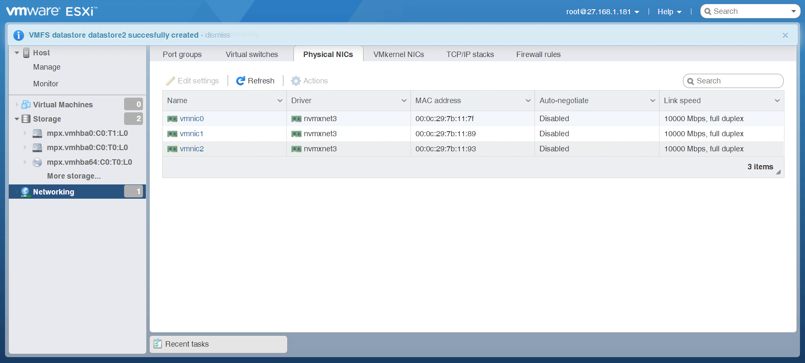
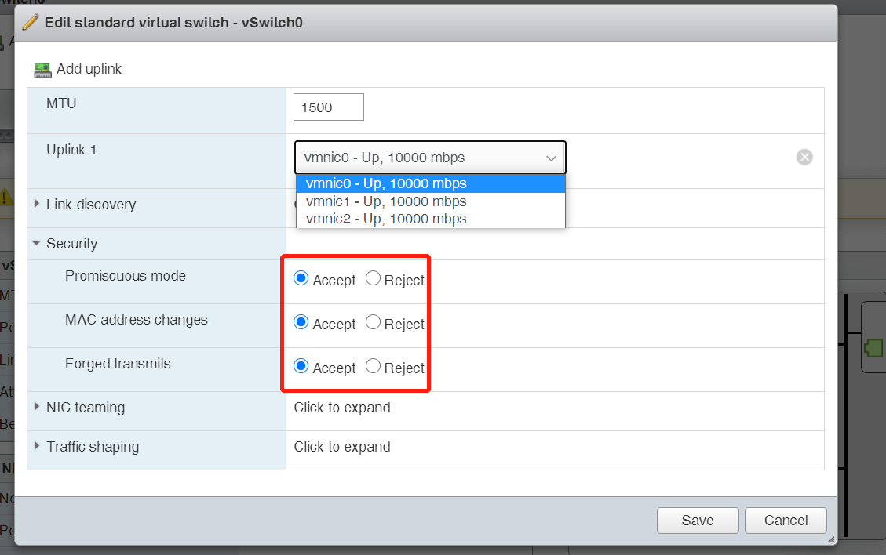
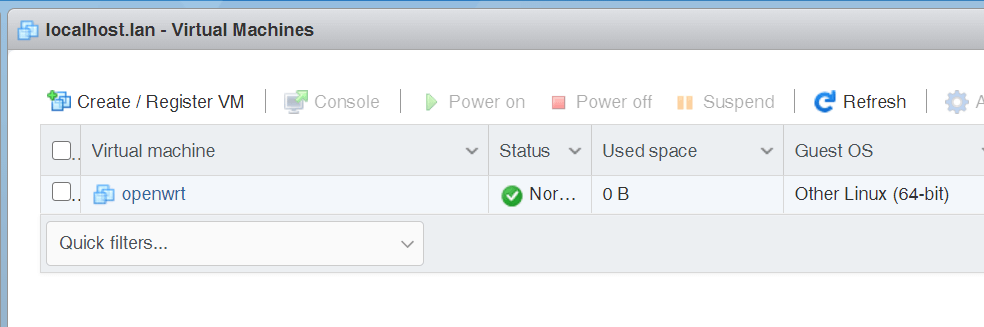
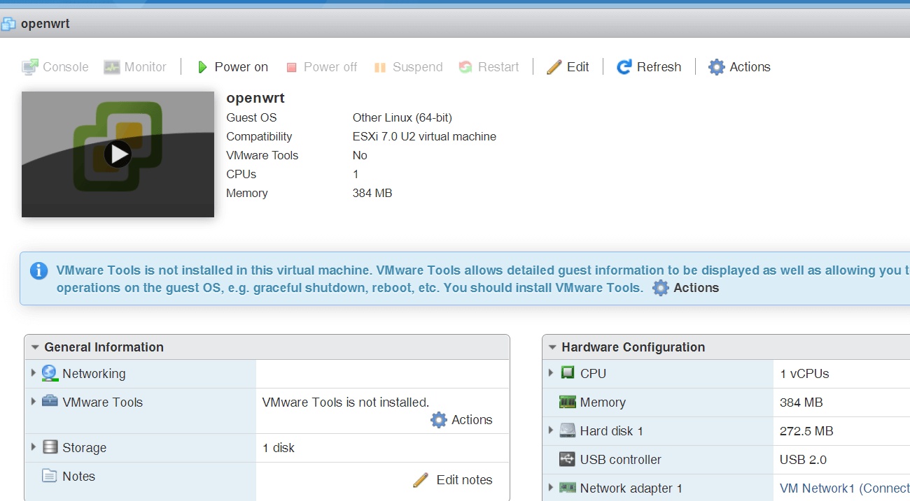
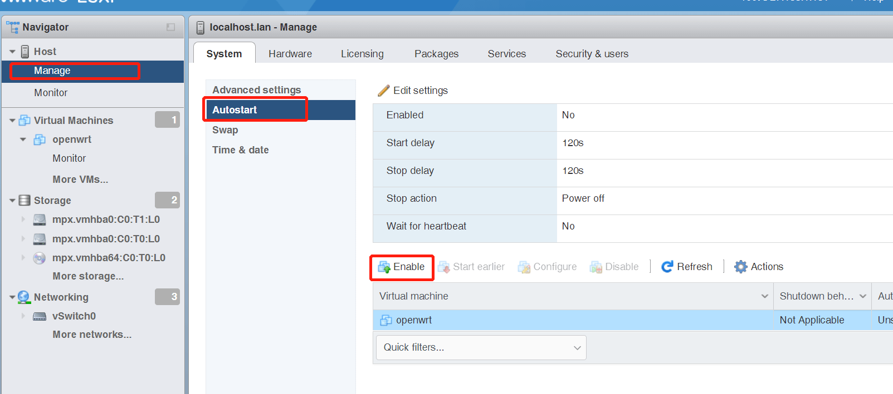

ESXi 的安装与使用
什么是 VMware vSphere
VMware vSphere 是 VMware 的虚拟化平台，可将数据中心转换为包括 CPU、存储和网络资源的聚合计算基础架构。vSphere 将这些基础架构作为一个统一的运行环境进行管理，并为您提供工具来管理加入该环境的数据中心。

vSphere 的两个核心组件是 ESXi 和 vCenter Server。ESXi 是用于创建并运行虚拟机和虚拟设备的虚拟化平台。vCenter Server 是一项服务，用于管理网络中连接的多个主机，并将主机资源池化。
vSphere Hypervisor 虚拟领域管理程序是一种可将服务器虚拟化的裸机管理程序，依托 VMware vSphere ESXi 体系架构构建。
ESXi 是安装在物理机上的管理器。vSphere Client 安装在一个笔记本或者桌面PC上，用于访问 ESXi 服务器进行虚拟机的创建和管理。vCenter server 像一个虚拟机一样安装在 ESXi 上面。在拥有多个 ESXi 服务器和数十个虚拟机时，vCenter server的应用就比较频繁了。在小环境下的管理通常都会使用 vSphere client 来直连 ESXi 服务器。
简单来说 ESXi 是直接安装在物理机器上用来管理硬件设备，相当于一个操作系统，然后在 ESXi 中安装虚拟机。它可以方便的给不同的虚拟机分配硬件资源，以及管理。
类似 VMware workstation 等产品是需要安装在某个操作系统内部运行的。
下载镜像
我们需要下载 vSphere Hypervisor 的 iso 镜像。
进入官网：https://www.vmware.com/products/vsphere-hypervisor.html
在右侧点击 download 会提示登录账号，然后需要注册下产品，点击 register：
然后找到 esxi ISO 镜像下载地址，点击下载：
当前最新版为 VMware vSphere 7.0 Update 2。
安装
然后我们需要将制作一个启动盘来安装 esxi，推荐使用 ventoy 来加载镜像，非常方便：https://www.ventoy.net/en/index.html
开机进入 boot 设置，将对应的启动盘设置为第一项启动，然后就可以进入 ventoy 引导画面了。
选择 esxi 镜像文件 enter 进入，下面我们就进入 esxi 安装程序了。
这里有第一个需要注意的地方，esxi 在第一次全新安装中会默认划分 120G 的虚拟闪存，类似于 Windows 的虚拟内存，提供更大的交换空间，为虚拟机提供读缓存，提升虚拟机的存储性能。
但是对于家用设备来说，120G 的空间白白占用有点浪费，所以我们需要自定义设置这个虚拟闪存的大小。
在引导进入安装界面后，立刻按下 shift + o 键，会停留在如下画面：
在下方可以输入命令行的地方，我们在已有命令后添加一句：autoPartitionOSDataSize=4096:
表示设置虚拟闪存大小为 4 GB，可以按照需要调整，数字就是 1024 乘以需要的 GB 大小。
回车确认后继续引导安装程序，期间会自动识别设备硬件。根据提示点击 enter 继续：
点击 F11 继续：
选择安装到那个硬盘，enter 确认继续：
选择键盘布局，默认即可：
设置 root 密码：
最后点击 F11 开始安装：
安装完成后提示可以移除引导盘并重启了：

连接管理
系统重启后，会自动识别第一个网口的网络地址，我们可以在同一局域网下通过 ESXi 的地址访问管理页面：
我们也可以通过网线将其他设备连接到第一个网口的方式进入管理页面，需要首先设置 esxi 的网络地址。点击 F2 进入配置界面，需要输入 root 密码：
进入 config management network：
默认选中的管理网络为第一个网口，可以自行修改：
我们需要配置 IPv4 configuration：
空格键选中 set static ipv4 address，并配置合适的 ip 地址，稍后需要将连接的设备也设置为同一网段才可以连接：
完成后点击 esc 退出配置，会弹出是否重启网络提示框，点击 Y 确认。
然后我们需要在通过网线连接的设备端配置网络到上面设置的同一网段内。这样就可以通过设置的静态地址来访问 esxi 管理页面了。
以上两种方式都可以进入 esxi 管理界面，这里我是通过局域网设备来实现的。
进入 esxi 管理
访问 esxi 的管理地址，这里我的 esxi 地址为 27.168.1.181。在局域网下其他设备浏览器打开这个地址：
登录 root 账户：
可以看到 esxi 7 自身占用了 1.3GB 内存和 2.5GB 硬盘空间。
hardware 栏里的 virtual flash 就是我们安装时候自定义的 4GB 虚拟闪存空间：
我们安装的是 esxi 评估版可以免费使用 60 天，如果想要一直使用则需要输入有效的序列号。可以通过 manage - licensing - actions - assign license 输入序列号：

配置磁盘
安装 esxi 的时候会格式化系统对应的磁盘，如果安装了多个磁盘并且需要在 esxi 中作为存储设备，就需要单独配置它们了。
点击左侧导航栏的 storage，然后选择 devices：
可以看到我有两块硬盘和一个 cdrom。其中最下面的 10G 的硬盘是 esxi 安装盘，点击进入可以查看详细信息：
其中 VMFSL 就是虚拟闪存空间，剩下的 VMFS 分区就是可用的数据分区。
点击进入第二个硬盘查看：
我们看到这里什么都没有，这是因为这块硬盘没有分配 datastore。我们点击 new datastore，首先给这个数据区取一个名字：
在下面的页面，我们首先选择 use full disk，这样会见整块硬盘都作为这个 datastore，然后点击 next：
点击 finish 后，datastroe 就建立完成了，这时候可以看到这块磁盘的信息：
返回 datastore 选项卡可以看到新建立的 datastore2 在列表中：

在后续的虚拟机安装中，我们可以选择将虚拟机安装到哪一个 datastore 中。
点击 datastore browser 可以查看其中的数据文件：

可以看到左上角有一个 upload 选项，我们可以远程将文件复制到 datasotre 中：
后续安装虚拟机时，我会通过这种方法将系统镜像文件复制到 datastore 中。
配置网卡
下面我们来配置网卡，这也是 esxi 的核心之一。我们可以将主机上的物理网卡定义为虚拟交换机，然后分配给虚拟机使用。
这里的配置非常自由，需要根据实际需求来设置，我们可以将每个网卡单独配置一个虚拟交换机，也可以将多个网卡设置为一个虚拟交换机。
选择左侧导航栏的 networking，然后点击 physical NICs，就是主机上的所有物理网卡，这里有三个：

然后我们切换到 virtual switches，这里就是定义虚拟交换机，默认有一个 vSwitch0，我们点击进去看看它的配置：
可以看到它绑定了我们的第一个网卡。我们点击 edit settings 进入配置：

uplink 定义了绑定到那个物理网卡。注意我们将 security 里的三个选项都设置为 accept 来使网络功能完整支持。点击 save 保存配置。
如果需要将另一个网卡也绑定到这个虚拟交换机，可以点击左上角的 add uplink：
这里我们将每个网卡都配置单独的虚拟交换机。
返回 virtual switches 栏，点击 add standard virtual switch 添加新的交换机：
将第二个网卡配置给 vSwitch1，同样的设置 security 为 accept。然后通过相同的方法配置第三个网卡，最终我们配置好了所有的交换机：
最后我们配置 port group 端口组，可以定义一个虚拟交换机的集合。我们安装虚拟机为其分配网卡时就是分配给其某个 port group。同一个虚拟交换机可以定义到多个集合中。
默认有两个集合，可以看到它们都是对应 vSwtich0：
注意不要修改第二个 Management Network 的配置，否则可能无法访问 esxi 管理页面。
我们将另外两个刚才建立的虚拟交换机定义到 port group 中，以便虚拟机可以调用。点击 add port group：
这里注意 group 名称如果最后一个是数字，则不要再前面加空格，否则虚拟机无法识别到它。
将所有的虚拟交换机都配置对应的 port group：
这样我们就配置好了所有的网卡部分。
这里有个进阶教程，可以将某个网卡或其他物理设备设置为直通模式，可以供虚拟机直接调用。可以提高性能。这样就不需要配置虚拟交换机了。
通过 manage - hardware - PCI devices 查看所有的硬件：
如果又可以直通的硬件，前面的复选框就可为可选状态，然后点击 左上角的 toggle passthrough 就可以切换直通模式了，这里我由于是虚拟机中安装的 esxi 所有网卡不可以设置为直通模式。
创建虚拟机
下面我们就可以创建虚拟机了。
首先配置虚拟机，左侧导航栏选择 virtual machines，然后点击 create/register vm 进入引导页面：
如果时创建新虚拟机则选择第一项，如果是添加已有的虚拟机则选择第三项，这里我们创建新虚拟机，点击 next。
设置虚拟机名称和系统类型，这里我安装一个 openwrt 系统：
然后选择虚拟机安装位置，也就是选择一个 datastore：
然后是定义虚拟机硬件配置，可以根据需要设置，这里我通过顶部的菜单添加一个新的 network adapter：
然后我们配置网络适配器对应的 port group，点击后面的下拉菜单可以看到我们在 port group 中定义的所有集合：
我给两个网络适配器分别分配不同的集合，也就是对应不同的虚拟交换机：
如果需要通过系统镜像的方式安装虚拟机，则需要配置 cdrom 为 datastore ISO file，然后选择提前上传到 datastore 的镜像文件：
这里我是通过提前准备好的 vmdk 虚拟磁盘文件来直接启动虚拟机，所以我需要将虚拟磁盘添加进来。
首先将默认的 disk 删除，然后选择 add hard disk - existing hard disk：
然后选中对应的磁盘文件，这里我们直接将磁盘文件放在 openwrt 目录内，方便后期管理：
然后点击 finish 完成虚拟机的硬件配置：
现在可以看到我们刚添加的 openwrt：

点击 openwrt 进入监控界面：

然后点击 power on 就可以启动虚拟机了。
开机自启
可以通过设置，让 esxi 启动后自动启动某个虚拟机，点击 manage - system - autostart，然后选中需要自动启动的虚拟机，点击 enable 即可：

如果有多个虚拟机需要自动启动，还可以设置它们的启动顺序。
以上就是 esxi 的简单安装和使用教程。